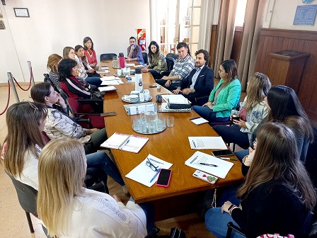

Observatorio del uso responsable de redes sociales
El Observatorio del Uso Responsable de las Redes Sociales es una mesa de trabajo dependiente del Honorable Consejo Deliberante de la ciudad de Bahía de Blanca, que tiene funcionalidad desde el año 2018 a través de la ordenanza municipal número 19.330. El organigrama del Observatorio consta de 4 comisiones de trabajo y una de Coordinación General conformada por 1 referente de cada Comisión y el coordinador general del espacio. Dentro de las comisiones hay representantes de distintas organizaciones e instituciones de la ciudad.
Agosto 2022